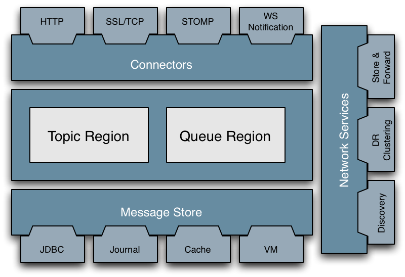

Apache ActiveMQ ™ -- Code Overview
Architecture
The following section walks through the main parts of Apache ActiveMQ and links to the code to help you understand the layout

JMS Client
The org.apache.activemq package defines the core JMS client.
Transport
The JMS client and the message broker use the Transport abstraction for sending around command objects (like a distributed Command Pattern). A TransportChannel typically deals with some kind of networking mechanism (TCP sockets using BIO, using NIO, UDP / multicast, SSL over sockets, JXTA, EmberIO etc). See the org.apache.activemq.transport package for more details
So the TransportChannel is basically concerned with sending and receiving Command objects (each instance represents some kind of command). Packet is defined in the org.apache.activemq.command package which defines all the JMS Message implementations classes (which are Commands) along with a number of other kinds of packets, like subsciptions, message acknowledgements, transactions and so forth.
WireFormat
There are various possible ways of encoding messages onto a stream. We may wish to adapt to various different encoding mechanisms - such as to provide simpler wire formats for talking to C / JavaScript or to make a C# friendly encoding.
So all the Transport implementations take a pluggable WireFormat implementation class - which is a Strategy Pattern for deciding how to write the Command to a DataIn / DataOut stream or Datagram.
So if you wish to provide your own binary, on the wire protocol then we just need a WireFormat implementation of your protocol, then we can use this with any transport (TCP BIO, NIO, JXTA etc).
We use OpenWireFormat by default which is the most efficient & easiest format to use from Java code - so if both ends of the wire are Java then its highly recommended. Though other WireFormats are most welcome.
Default Wire Format
The default wire format writes a byte which indicates the kind of Command which is being sent (see the CommandTypes interface which defines all the int constants for each type of command.
The core JMS Message types each have a unique byte ID for
- Message
- ObjectMessage
- TextMessage
- MapMessage
- BytesMessage
- StreamMessage
Then in addition there are various other types of command such as
- ConnectionInfo for when a new connection is established with a message broker
- ConsumerInfo when a new consumer is created on a connection
- MessageAck to acknowledge a message ID
- TransactionInfo to denote a transaction
There are a few others; the org.apache.activemq.command package describes them in their gory detail.
Basically the DefaultWireFormat has a default encoding of each of these commands. So after the first byte which indicates the type of packet is written, there is a specific wire format per packet type.
For new wire formats it may be that you only need to support a small subset of these types. e.g. you might just have a simple publish message, consume message & message ack.
Message Broker
The APIs for the message broker (server side of the JMS client) are defined in the org.apache.activemq.broker. There are various other packages which define different parts, from the message stores to the message routing and so forth.
To see an overview of these packages try the JavaDocs
ActiveMQ System Overview
Introduction
ActiveMQ is the system responsible for creating and managing network connections used for communication between clients and the broker. This document hopes to outline the inner workings of this system with in order to make it easier to understand for future developers. It will give a high-level overview of the system and outline the major players. We will also cover a few other interesting classes that may be useful to others working on the system. Most of this document is written with the server side code in mind. This is because the client-side communication systems are architecturally simple and understanding the server will make understanding clients trivial by comparison.
We assume the reader has basic understanding of JMS. Refer to the official Java docs for more information.
Overview: The Big Players
The core classes involved in the ActiveMQ communication system are Transports. These include the Transport, TransportServer, and TransportFactory hierarchies. Transports and TransportServers are wrappers around sockets and server sockets respectively. TransportFactorys (as you may have guessed) are factories that create Transports and TransportServers. Transports are connected to Brokers and transmit Commands, which represent all major actions to be taken by ActiveMQ (more on this later). The following example illustrates how these pieces fit together.
The primary class needed to create a JMS "provider" application is the Broker class. The default ActiveMQ binary will use a BrokerService class to wrap around Brokers. When the application is started, it instantiates a BrokerService and instructs it to bind to a specific (local) address, say "tcp://localhost:61616". The Broker will use the scheme in the given address and find the proper TransportFactory, TcpTransportFactory in this example. This factory will then be used to create a TcpTransportServer that will be bound to "localhost:61616". Once the TransportServer is started, it will continually pole its socket for incoming connections. Successfully connected incoming sockets will be wrapped in a TcpTransport instance and passed back (indirectly) to the Broker. The Broker will then start polling the new Transport for incoming Commands to process.
The final pieces missing from the above example are the TransportConnection and TransportConnector classes. These classes are used to connect Brokers to Transports and TransportServers respectively.
Class Details
This section will explain some of the more interesting details of the mentioned classes separately.
Transports, TransportServers, and TransportFactories
The basic principles of how these classes operate are very simple: Transports and TransportServers are wrappers around sockets and server sockets used to hide implementation, and TransportFactorys are factory classes for the mentioned classes. The only caveats are how TransportFactorys are chosen and configured based on URIs they are supplied.
The TransportFactory class is abstract and incapable of creating Transport or TransportServer classes directly. It, nevertheless, is the class used to create Transports and TransportServers. TransportFactory delegates its responsibilities to its subclasses based on the choice of subclass provided by the FactoryFinder class, which uses the URI's scheme to find a matching factory classes based on text files stored under the META-INF directory.
Configuration of the created Transports is done entirely to reflection. Transports are configured through calls to compositeConfigure, which are made by the factory at the time of the Transport's creation. compositeConfigure uses the IntrospectionSupport class to call setters for parameters passed in through the URI. For example, creating a Transport using the URI "ssl://localhost:61616/?needClientAuth=true" would result in the creation of an SslTransport object whose setNeedClientAuth method (if it exists) is called with the value of true immediately after its creation. TransportServers operate in a similar fashion. The only difference is that the call to IntrospectionSupport is made from the doBind method of the TransportFactory.
Commands
Commands are the main means for communication within Brokers. Each Command represents an action to be taken. Command subclasses include ConnectionInfo, KeepAliveInfo, and Message, which result in processing of new connections, maintenance of old connections, and processing of user messages respectively. These classes are de-serialized from Transports using Marshalers. Whenever new data is found in a socket, the first byte is read to determine what type of Command being received. The proper Marshaller is then selected to de-serialize the Command (e.g. to de-serialize a ConnectionInfo, the ConnectionInfoMarshaller is used).
TransportConnections and TransportConnectors
Every TransportServer is connected to a Broker using a TransportConnector. The server's accept listener (which is called when a new Transport is constructed) is set to call the given TransportConnector's createConnection method with the new Transport. When called, createConnection creates a new TransportConnection that links the given Transport and the supporting Broker together; the Transport's transport listener is set to the TransportConnection's onCommand method, which is then called whenever a new Command is received.
Commands and AbstractConnection (the superclass of TransportConnection) form a visitor pattern. onCommand will call AbstractConnection's service method which will make a series of calls in line with the visitor patter and eventually, the proper Command subclass to be passed to the corresponding method of the Broker for processing.
BrokerFilters and BrokerPlugins
While not used directly by the communication system, BrokerFilters and BrokerPlugins provide an effective and easy to use way of modifying Broker behavior. BrokerFilters allow for one to modify a few Broker methods without touching the rest (as the name suggests). The BrokerFilter passes on all of its responsibilities to a Broker it receives in its constructor. Subclassing BrokerFilter allows us to perform additional actions before passing the work down to the underlying Broker.
The power of the BrokerFilter class comes from the fact that multiple filters can be cascaded to create different functional combinations. As an example, the JaasAuthenticationBroker is a subclass of BrokerFilter that modifies the methods used for adding and removing connections to allow for JAAS authentication. AuthorizationBroker is another subclass of BrokerFilter. This class modifies the destination regulation methods to enforce access levels. With this architecture, one can create a JaasAuthenticationBroker and have it use an AuthorizationBroker as its underlying broker (which would use another broker itself, etc.).
BrokerPlugins are simple classes that will wrap their corresponding Brokers around the one they are given. i.e. "installing" an AuthorizationPlugin on an existing Broker will create an AuthorizationBroker that uses the original Broker internally. The main reason for the existence of BrokerPlugins is to allow for one to configure the Broker used by the BrokerService class (either through code or XML configuration and spring).